Poet #76539
2.13 ETH
Poet #26539
1.13 ETH
Poet #74339
2.13 ETH

Poet #96539
0.33 ETH

Poet #76783
2.50 ETH

Poet #26539
2.25 ETH

Poet #44539
1.11 ETH
Poet #55539
0.25 ETH

Poet #78539
0.13 ETH
Poet #12539
4.30 ETH

Poet #90539
0.54 ETH

Poet #34659
3.13 ETH

Poet #22239
2.23 ETH
Poet #33539
1.98 ETH
Poet #87539
0.72 ETH
Poet #00539
3.73 ETH

Poet #57539
0.33 ETH
Poet #89539
1.13 ETH
Poet #23539
2.44 ETH

Poet #43539
2.00 ETH

Poet #98539
2.63 ETH

Poet #76939
4.13 ETH
Poet #76577
3.33 ETH

Poet #26538
1.10 ETH

It is no longer possible to convert Pages into Poets. Origin airdrops begin as part of this journey. Every day 2 Origins will be dropped to their own latents.
"The Explorer" is the Act where Collectors make discoveries about mechanisms. This act will reveal its mechanics over time, so don't expect an immediate shift in the game's perspective. As a part of this act, more traits will be revealed.
Poets can be fed with pages. Each page will grant its poet the right to be renamed. Rename rights do not have to be exercised, and may remain unused. Page consumption and Rename mechanisms will be activated in 2 weeks.
Words that will appear for each given page will be determined by their poets.
Each page fed to a poet grants that poet an extra "rewrite," which may be used to change the poet's name or rewrite a poem. Each page fed to a poet will generate 2 to 4 words at random.
Your poets' uniqueness will be altered by their words. Some of these rarities will be disclosed right away, while others will remain concealed. Will you choose to be understood and valued for the meaning you produce, or will you prefer to be meaningless in order to be unique?
The adventure for The Explorer continues.
Choose one of two. Exchange or retain Pages.
Each Page swap brings a unique Poet. Poets have hidden rarities that will come to light over time. The value of a rarity is affected by other Poets.
Poets are Poets, and Poets need poetry, and poetry needs words. After all, who could understand poetry that isn't written in words?
As a result, mute Poets remain unnamed. After all, who knows a stone's name if it can't talk?
Poets are Poets, yet with each new Page they may be renamed. With each Page you give them, they will be able to speak more words. This mechanism will be activated in Act III: The Explorer.
So tell me librarian, do you want an army of mute Poets or a Poet who can speak a lot of things?
Oh and the unfettered Origins. They can speak every word and they can only be named once. Words and names don't require Pages. When an Origin is renamed, it is renamed for each Poet who bears it.
Finally a twist.
Lost Poets is an NFT collectible and a strategy game. The NFT collection includes 65536 obtainable NFTs and 1024 Origin NFTs. The project's release is broken down into several stages. For further information, see the secret roadmap.
The sale phase is 48 hours. Every page you acquire gives you the opportunity to claim a Poet NFT. In a way, each page is your ticket to a Poet.
Additionally, when the sale ends all remaining Pages will be distributed to Page holders proportionally. In a way, each page represents your part of the remaining token pool.
During the sale period, you will be able to collect pages for a set price of 0.32 $ETH each. When you get multiple pages at once, you'll also get a percentage of extra pages. The sooner you collect, the more extra pages you'll get.
The pages you acquire will be locked to your wallet until the 48-hour sale window closes./p>
$ASH holders will have one hour of early access to the sale. See the ecosystem for more.
Aeons ago in The Library of Babel, the dusty shelves of a room contained 65536 poets that were all waiting to be discovered ab aeterno. In this fractal labyrinth, these forgotten poets from 1024 different origins roam between their hidden 256 selves.
Unlike many other NFT collectibles, these poet NFTs are not constructed of modular pieces. Each Poet is created by an AI that was developed specifically for that purpose. They're diverse, sophisticated, and most importantly, they're all unique and different from one another.
Every Poet comes from one of the 1024 pure origin NFTs. Origins are manipulated by 256 different latent genes, giving every Poet individuality, value and meaning.
Collectors will be able to give their Poets names and create their own tales. As a consequence, the explorers of this civilization will mold it.
2 Origin Poets will be randomly dropped to collectors every day for 365 days. During these drops, each Origin Poet will only be able to access its own latents. In other words, every day, you'll have a chance to win the Origin tokens for all of your Poets. See the secret roadmap for details.
At the "The Twist" stage of the game, a new mechanism will be introduced, which will alter the collection's value structure.
During the sale, all collectors will be sorted according to the amount of pages they acquire. Top 100 collectors will receive multiple Origin tokens depending on their position on the leaderboard.
The Lost Poets collection is linked to the Burn/$ASH ecosystem. Based on a snapshot taken just before the launch of this website, 7586 of 65536 pages are distributed to current $ASH holders with their balances taken into account.
When the project roadmap reaches its conclusion, all Poet NFTs will be added to the Burn.art high tier list and will give $ASH when burnt.
A part of the Origin Poets will be saved for the Lost Poets' future. They will be strategically auctioned or given away on important occasions.
Prologue
Act I: The sale
Act II: the reveal
Act III: the explorer
Act IV: the twist
Epilogue